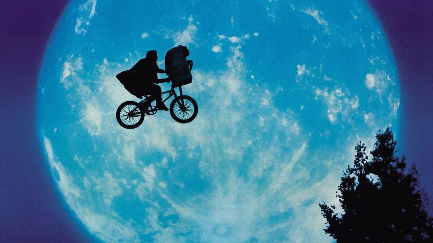

1977 - late 1990s

The Dawn of Modern Film Era saw advancements in film production techniques and computer generated special effects to produce huge hits by directors who were going above and beyond compared to past eras in the film industry. This is evident in George Lucas' 1977 classic "Star Wars IV -
A New Hope", Ridley Scott's 1979 horror "Aliens", and Robert Zemeckis' 1985 sci-fi "Back to the Future".
BLOCKBUSTER!!
The Dawn of Modern Film not only filmmakers showing their audiences the advancing techniques and effects in film but also introduced Blockbuster
into the world. Blockbuster became hugely popular rapidly by creating worldwide media events which evidently made tons of money for Hollywood.